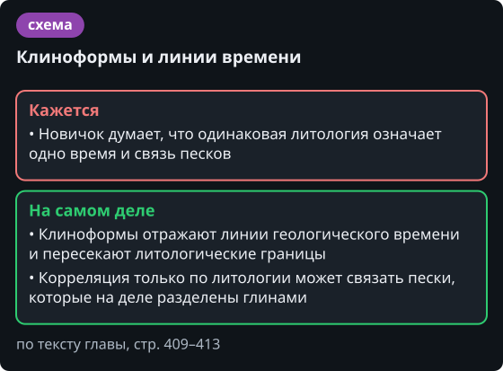

Часть 1
Клиноформы и линии времени
В книге: 9.3 (конец): клиноформы и корреляция по времени · стр. 409–413
Суть
Клиноформы отражают линии геологического времени и пересекают литологические границы. Корреляция только по литологии может связать пески, которые на деле разделены глинами. Такая ошибка ухудшает заводнение и дебит скважины. стр. 409–413 · пояснение ИИ
Почему сейчас. Это базовая идея корреляции в дельтах, без неё не понять примеры речных дельт и Прадхо-Бей.
Как это работает
Клиноформы отражают линии геологического времени. Они пересекают литостратиграфические границы. Для правильной подземной корреляции это важно понимать. стр. 410 · пояснение ИИ
Цитаты автора: 1
Наблюдение Клиноформы отражают линии геологического времени и пересекают литостратиграфические границы.
clinoforms, which represent geological time lines, crosscut lithostratigraphic boundaries стр. 410 · из книги
Корреляцию строят по литофациям, то есть по интервалам с похожим откликом каротажа, и по времени. Гетеролитовые и глинистые интервалы разделяют пески. стр. 410 · пояснение ИИ
Цитаты автора: 1
Наблюдение Корреляция строится по литофациям с похожим откликом каротажа и по времени.
correlations based upon lithofacies (stratigraphic intervals with similarities in well log response) стр. 410 · из книги
Между скважинами 1 и 2 пески не сообщаются. Этот эффект ухудшает заводнение и дебит одной скважины. стр. 410 · пояснение ИИ
Цитаты автора: 1
Вывод Этот эффект ухудшает заводнение и дебит одной скважины.
This feature will adversely affect waterflood performance as well as single-well productivity. стр. 410 · из книги
Для дельты Меконга приведены литостратиграфическая и хроностратиграфическая корреляции. Они показывают, как линии времени пересекают границы литофаций. стр. 410 · пояснение ИИ
Цитаты автора: 1
Наблюдение Литостратиграфическая и хроностратиграфическая корреляции для дельты Меконга показывают пересечение линий времени и границ литофаций.
illustrate the crossing nature of time lines and lithofacies boundaries стр. 410 · из книги
Истинные хроностратиграфические корреляции показывают возможные боковые разрывы внутри литостратиграфических интервалов. стр. 410 · пояснение ИИ
Цитаты автора: 1
Вывод Истинная хроностратиграфическая корреляция показывает возможные боковые разрывы внутри литостратиграфических интервалов.
The true chronostratigraphic correlations demonstrate the potential for lateral discontinuities within the lithostratigraphic intervals. стр. 410 · из книги
Рисунок и модель

На практике
Где здесь ручной труд специалиста
- Вход
- Входные данные: каротажные кривые скважин и интервалы с похожим откликом каротажа.
- Ручные шаги
- Ручные шаги: сопоставить интервалы между скважинами по литофациям и по времени.
- Точки суждения
- Точки суждения: какие глинистые и гетеролитовые интервалы разделяют пески.
- Время
- Время: в главе не указано.
- Типичные ошибки
- Типичные ошибки: коррелировать только по литологии и связать пески, разделённые глинами.
Цифры и условия
Наступание дельты Меконга датировано за последние 6000 лет. стр. 410 · пояснение ИИ
Цитаты автора: 1
Наблюдение Наступание дельты Меконга датировано за последние 6000 лет.
Progradation of the delta has been age-dated for the last 6000 years. стр. 410 · из книги
Линии геологического времени на рис. 9.11b измеряются в тысячах лет. стр. 412, 413 · пояснение ИИ
Цитаты автора: 1
Наблюдение Линии времени на рис. 9.11b пересекают границы литофаций и измеряются в тысячах лет.
FIGURE 9.11—cont'd (b) Lithostratigraphic correlation of wells based upon paleoenvironmental interpretation. Numbered lines that crosscut lithofacies boundaries are measured geologic time lines in 1000s of years; they demonstrate the progradational nature of the delta. стр. 412 · из книги
Пример на рис. 9.10 гипотетический. Он иллюстрирует принцип, а не реальный разрез. стр. 410 · пояснение ИИ
Цитаты автора: 1
Наблюдение Пример на рис. 9.10 гипотетический.
The hypothetical example in Fig. 9.10 shows correlations based upon lithofacies (stratigraphic intervals with similarities in well log response) and upon geological time. стр. 410 · из книги
Глинистые и гетеролитовые интервалы ухудшают заводнение и дебит одной скважины, если разделяют пески. стр. 410 · пояснение ИИ
- Глинистые и гетеролитовые интервалы разделяют пески, и между скважинами 1 и 2 связи нет. стр. 410 · из книги
Цитата автора
so that the sands between wells 1 and 2 are not in communication стр. 410 · из книги
Новые понятия
- клиноформа clinoform
- Наклонная поверхность в наступающей дельте. По книге она отражает линию геологического времени.
- литостратиграфическая корреляция lithostratigraphic correlation
- Сопоставление слоёв между скважинами по литологии и отклику каротажа.
- хроностратиграфическая корреляция chronostratigraphic correlation
- Сопоставление слоёв по линиям геологического времени, которые пересекают литологические границы.
- литофация lithofacies
- Интервал породы с похожим составом и откликом каротажа. Литофации пересекаются линиями времени.
- речная дельта river-dominated delta
- Речная дельта (river-dominated delta) — дельта, где осадок приносит река, а волны и течения берег не перерабатывают.
Частая ошибка
Новичок думает, что одинаковая литология означает одно время и связь песков. Линии времени пересекают литологические границы. Пески могут быть разделены глинистыми интервалами, даже если выглядят одинаково.
Что это значит для данных
Из главы. Корреляция по литологии и по времени может дать разные связи песков. Пески, сплошные по каротажу, могут быть разделены глинами.
Где правило ломается. Модель по сходству отклика каротажа свяжет пески, которые разделены глинистыми интервалами. Связь окажется ложной, а заводнение и дебит скважины ухудшатся.
гипотеза Если есть данные о возрасте или линиях времени, связи песков можно проверить по ним.
гипотеза Глинистые интервалы между песками могут ограничивать перетоки между скважинами.
Аналогия из ИТ. Соединение таблиц по похожему столбцу вместо настоящего ключа. Строки совпали по виду, а событие разное. внешнее
Где она перестаёт работать. Литология не является ключом времени. Похожие пески могут относиться к разным линиям времени, а в каротаже ключа времени нет.
Глубже
Рис. 9.10 показывает две скважины: литостратиграфическую корреляцию сверху и хроностратиграфическую снизу. стр. 410, 411 · пояснение ИИ
В хроностратиграфической корреляции глины и гетеролиты разделяют пески. В литостратиграфической пески выглядят сплошными. стр. 410, 411 · пояснение ИИ
Цитаты автора: 1
Наблюдение В хроностратиграфической корреляции глины и гетеролиты разделяют пески, в литостратиграфической пески выглядят сплошными.
Note the heterolithics and shales that separate sands in the chronostratigraphic correlation compared with the continuity of the sands in the lithostratigraphic correlation. стр. 410 · из книги
На рис. 9.11c корреляция по времени (хроностратиграфическая) отличается от рис. 9.11b, построенной по литологии. стр. 412, 413 · пояснение ИИ
Цитаты автора: 1
Вывод Корреляция единиц по времени отличается от корреляции по литологии.
Note the difference in correlation of sedimentary units based upon the lithostratigraphic and chronostratigraphic correlation strategies. стр. 412 · из книги
На карте (a) рис. 9.11 показано сечение A–B с положением скважин. стр. 411, 412 · пояснение ИИ
Цитаты автора: 1
Наблюдение На карте рис. 9.11a показано сечение A–B с положением скважин.
Cross-sections A–B with well locations are shown. стр. 411 · из книги
Задания
Что отражают клиноформы по отношению к литостратиграфическим границам?
Что верно для корреляции песков по одной литологии между скважинами 1 и 2?
Наступание дельты Меконга датировано за последние лет.
Пометки к тексту книги: 2
- стр. 410: Рис. 9.10: верхняя и нижняя корреляции двух скважин, связь песков видна только на рисунке
- стр. 411: Рис. 9.11 (a): карта дельты Меконга и сечение A–B; подписи линий времени в (b) и (c) на стр. 412